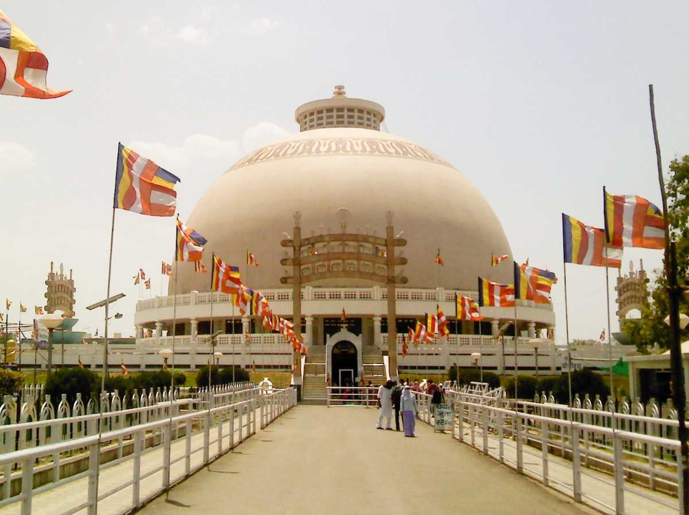
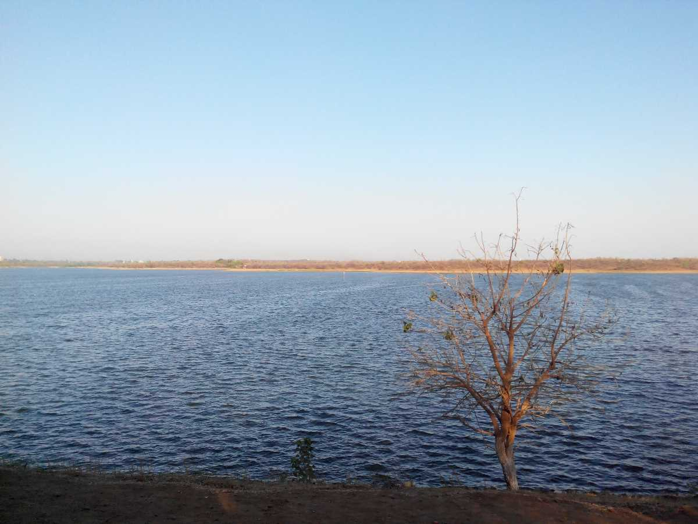

Tadoba Andhari Tiger Project aka Tadoba Andhari Tiger Reserve is a reserved forest in the district of Chandrapur, Maharashtra. This vast region is dedicated to the conservation of the ‘National Animal of India’. TATR is Maharashtra’s largest and oldest tiger reserve and is listed one among the 50 Project Tiger reserves all over India. It is frequented by the nature-lovers and tourists alike as it is the apt place for spotting the Indian tigers in wild.

Ramtek fort
Ballarpur fort was founded by the Gond King Khandkya Ballal Sah (1437-62), who succeeded to the throne of Ser Sah, his father. He was also the founder of the Chandrapur city. The King discovered a pond with miraculous waters which healed his boils and tumors. It was named as Akaleshwar tirth. The town grew up around the fort as Ballarpur or the city of Ballal.

Ambazari Lake
Chandrapur Super Thermal Power Station (often abbreviated as CSTPS) is a thermal power plant located in Chandrapur district in the Indian state of Maharashtra. The power plant is one of the coal based power plants of MAHAGENCO. The coal for the power plant is sourced from Durgapur and Padmapur Collieries of Western Coalfields Limited.